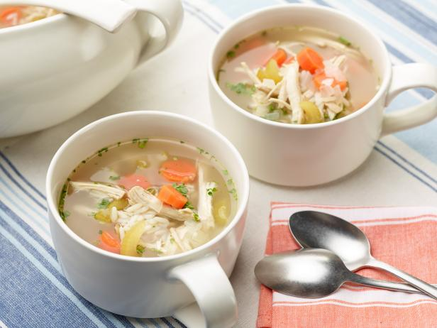

Home
Chicken Soup!

This recipe is a delicious way to get over a cough or cold! With premium chicken breast and hearty vegtables you'll be feeling better than before in no time!
Ingredients
- 2 tablespoons unsalted butter
- 1 onion, diced
- 2 carrots, peeled and diced
- 2 celery ribs, diced
- 3 cloves garlic, minced
- 8 cups chicken stock
- 2 bay leaves
- Kosher salt freshly ground black pepper, to taste
- 2 1/2 pounds bone-in, skinless chicken breasts
- 2 1/2 cups wide egg noodles
- 2 tablespoons chopped fresh parsley leaves
- 2 tablespoons chopped fresh dill
- 1 tablespoon freshly squeezed lemon juice, or more, to taste
Steps
-
Place a large dutch oven or pot over medium high heat and add
in oil. Once oil is hot, add in garlic, onion, carrots and celery
; cook for a few minutes until onion becomes translucent
-
Next add in grated ginger and grated turmeric.
Saute for 30 seconds to let the spices cook a
bit, then add in chicken broth, chicken breast,
rosemary, thyme, salt and pepper.
- Bring soup to a boil, then stir in couscous. You’ll want the chicken to be covered by the broth so make sure you stir them down to the bottom.
- Reduce heat to medium low and simmer uncovered for 20-25 minutes or until chicken is fully cooked.
-
Once chicken is cooked, remove with a slotted spoon and transfer to a cutting board to shred with two forks. Add chicken back to pot then stir in frozen peas. If you find that you don't have enough broth, feel free to add in another cup. Everyone likes their soup differently. Taste and adjust seasonings, if necessary. Enjoy.